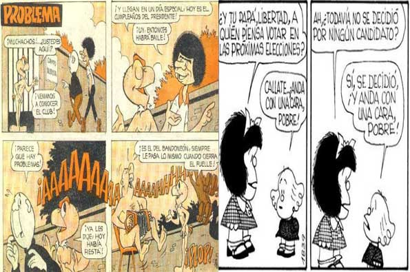
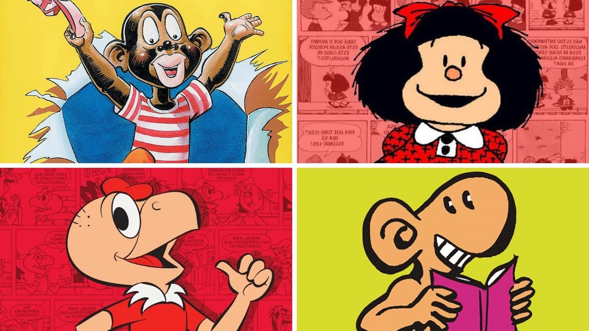

Ejemplo en Argentina en 1920, La nacion es el primer diario argentino
con historietas la obra elegida fue la estadounidense Bringing Up
Father »Pequeñas delicias de la vida conyugal» de George McManus.
Pero todos los países de esta parte del continente comenzaban no con
sus propias historietas, sino que compraban los derechos a ee.uu para
utilizarlas.
Y en las épocas de los 50/60’s varias editoriales de habla hispana
comercializaban títulos conocidos de dc comics y Marvel.
Pero no hay que olvidar que en los 30’s cada país se animaba a
sacar sus propias historietas, más que nada debido a varias
políticas por las guerras mundiales y posguerra, hizo que se
desarrollara las industria propia de esos paises incluido latam e
iban popularizándose. Aunque dependían de los diarios después
sufrirían el proceso de independización creando sus propias
revistas o en algunos casos permaneciendo en el diario. En todos
los países de latam a lo largo de los años se han gestado grandes
historias aquí algunos de sus exponentes.
 
- Argentina- »El indio Patoruzú»/ »mafalda»
- Colombia- »Copetin»
- Mexico- »El santo»
- Venezuela-»Tuk y su dinosaurio»/ »el náufrago»
- Ecuador- “El Capitán Escudo”
- Chile- »Condorito.
- Bolivia- »La Maquinita»/ »Rayo justiciero»
- Peru- »Supercholo»/ »El Cuy»
- Uruguay- “Peloduro” /“El Pulga”
Nombrar a todas las historietas sería imposible, pero no hay que sacar de vista que hubo un tiempo en que fuimos bastante creativos y productivos en este medio, pero la industria fue decayendo por nuestras economías y la poca solvencia de estas; más que el formato audiovisual calo demasiado.